引言
《我推》的背景設定在近現代的日本，雨宮吾郎是在鄉下工作的婦產科醫生，他和其病人紗理奈都是吹捧星野愛，即「推」的偶像，隨著紗理奈因病去世，愛因為未成年懷孕而成為了吾郎的病人，但是吾郎在愛分娩前被人殺害，愛則生下一對龍鳳胎。但吾郎和紗理奈竟然轉生成為愛的孩子，阿奎亞和露比，某天愛在家中被瘋狂粉絲刺殺身亡，阿奎亞與露比於是逐漸踏進演藝圈，試圖發掘愛遇害事件的幕後黑手，並以一套電影《十五年的謊言》進行復仇。
演藝圈的新人困境
首先，《我推》描寫了剛剛踏入演藝圈的新人面對的困境──不論是新偶像，還是新演員，都只是上層的投資品，在藝術作品裏面，主要目的往往是吹捧上層內定出名的藝人，新人是用完即棄，即使有實力也未必出名，其中一個表現為劇組的剪輯。以偶像愛為例，她一開始在第一次拍電影劇的工作中，本來拍攝了很多鏡頭，可是因為當時一位「超可愛演技派」的女演員正在當紅，愛在很多的鏡頭中表現得甚至比那位當紅的演員更吸引，因此在高層的商業考慮下，愛被刪減剩1個鏡頭，畢竟企業就是要考慮作品的收入和穩定性，可見新人演員單靠實力也未必可以突圍而出，後來是靠阿奎亞的人脈，他被導演賞識，透過搭配促銷，愛才有了另一次出演「沒有刪減鏡頭」的電影機會，同為拍電影，可是因為人脈的關係，愛的鏡頭才得以保留，這對比正表現出人脈比起實力更重要。
而演員亦有類似的現象，有馬佳奈年少時是一位演技極高的童星，但是因為態度腹黑，蔑視其他人，後來熱度過去之後便少了很多工作，後來有馬逐漸轉變成配合其他演員，提升作品和其他演員的品質，不強調表現自我，即使如此，後來的電視劇《今甜》的製作人鏑木也是因為有馬的出場費便宜，以及有馬的知名度，而非欣賞他的能力，可見演藝圈重視功利，演員最重要的是溝通，而非演技。
在《今甜》的真人秀中，劇組更是為了真人秀的曝光而有「刻意把黑川赤音塑造成反面角色的想法」，赤音是一名演員，她在真人秀中因為遲遲沒有亮眼的表現而狗急跳牆，不小心弄傷了當紅的模特兒鷲見有希，由於他們的關係良好，有希在受傷後抱住和安慰赤音，可是在劇組的惡意刪剪下，抱住赤音的片段被刪去，赤音因此被炎上，她道歉後網民更是變本加厲，因為只有犯錯的人才要道歉，她道歉的話，網民便更有待無恐地打罵，使她有自殺的想法，可見劇組為了作品的話題性，不惜傷害演員。值得一提的是，赤音自殺未遂的情節與真人實境節目《雙層公寓》參與者木村花被工作人員煽動，在節目中向男嘉賓大發雷霆，後來不堪網絡的惡意輿論而自殺的事件十分相似。
成名的艱辛與謊言
新人成名的過程艱辛，要成名就必須不擇手段，充滿謊言，而且心理壓力巨大。為了在突顯自身的特別之處，藝人往往會給自己塑造一個鮮明的「人設」，例如現實中的歌手倖田來未，她本來塑造的是實力型人設，但是並不成功，到後來她又把人設改成性感型歌手，才開始走紅。
星野愛也一樣，自小在單親家庭中成長，被母親虐待，成為偶像之前只能用謊言才能生活，是謊言保護了愛，成為B小町偶像後愛更使用謊言打造完美偶像的「人設」，只能展現自己可愛、完美的一面，可以說他整個人都是由謊言拼湊出來的，她只能隱瞞自己被B小町團員妒忌的無奈和孤獨情感，隱瞞有雙胞胎的事，大眾更是把愛的謊言「人設」當成理所當然，沒有人把她當是一個活生生的人來對待，狂粉涼介、愛的男朋友神木輝和B小町的前團員妮諾就是因為對愛的完美過分執著，當初對愛的仰慕，變成妒忌，最後因愛成恨，認為心目中的愛只能是完美，接受不了愛會未婚懷孕，會有不完美的一面，才出現了行凶動機，直到愛被涼介刺殺，她嘴裏仍然在說謊，嘗試向涼介展現自己的愛，例如她記得涼介的名字，送的禮物等等。
在更深的意義上，在遇見神木之前，愛一直都沒有愛過任何一個人，一直以謊言表達對粉絲的愛意，象徵著「偶像只能透過謊言才能發光」，當愛希望試著真正地愛神木，在懷孕時向他提出分手這個謊言，實際在試圖減少他對胎中生命的負擔，以此舒緩神木的焦慮時，這份愛情便注定了不長久，因為真正的愛情不能只有謊言，更何況她愛的是被演藝圈黑暗而產生扭曲心態的神木，他心底竟然會以殺死當紅女星為樂，愛的死象徵著，謊言是雙面刃，能保護藝人、讓藝人出名，但也能毀了藝人。
值得一提的是藝人被狂粉刺殺的事件在現實中，例如一位藝名高野愛的藝人富田真由，在退回一位粉絲贈送的禮物後，收到該粉絲多次發送的恐嚇短訊，其後在她準備前往表演時，刺了她20多刀，斷送了她演藝生涯。
露比與母親相反，討厭謊言，一開始只是依賴其事務所的人氣藝人皮耶勇酷雞宣傳、翻唱B小町的歌等普通方法來宣傳，但在得知母親死亡不單純後，為了查出凶手，便開始說謊，塑造自己笨笨的可愛人設、誇大自己的言語，盡力地扮演小丑，亦籠絡助理導演成為自己的經紀人，也利用一次電視台節目《深機不可失》對角色扮演者不尊重、性騷擾的炎上來籠絡電視台導演，使露比愈發討厭自己，一度差點被黑暗侵蝕，但是因為阿奎亞，她明白成為偶像的本質就是以謊言，為粉絲消除黑暗、帶來希望，因此克服了阿奎亞死亡的創傷，成為比母親更吸引的偶像。
其外，演藝圈藝人事務所財雄勢大，但藝人的利益和權利並未得到保障。在現實中，日本演藝經紀公司傑尼斯事務所的創辦人強尼喜多川，曾經侵犯多個旗下藝人，甚至包含未成年人，使其改名為SMILE-UP.。在《我推》中B小町成員的社交帳號由事務所管理，一旦離開事務所，便不能繼續使用偶像的社交帳號，事務所會禁止你跟朋友出去玩、交男朋友，偷偷交了也會設法讓他們分手。而且藝人經常被記者24小時跟蹤，在日本，土地是可以私人擁有的，因此他人擅自進入可以視為違法行為，但是藝人就算報警記者非法入侵私人土地，警察也不會干預，可見藝人求助無門。
《我推》指出，藝人的版權大多由事務所擁有，一旦離開事務所就不能唱之前的歌，也道出日本的事務所缺乏自治職能，在好萊塢，如果制作公司違反了演員協會的規定，就會罰款，例如在試鏡時演員等待的時間超過1小時就需要按時支付報酬，日本則沒有補償。
隱秘的欺凌與內心獨白
演藝圈存在嚴重的欺凌問題。在2023年9月，寶塚歌劇團的宙組成員有愛紀伊跳樓身亡，雖然成立了調查組，但是調查並不承認有霸凌問題，日本媒體則認為紀伊遭到前輩霸凌是其輕生的主因。直至2024年3月，劇團才承認14項霸凌行為，《我推》雖然沒有直接描寫欺凌問題，但是愛的死反映比欺凌更嚴重的問題：人會被演藝圈的黑暗吞噬，作出謀殺行為、性侵：神木被姬川愛梨性侵，但她也是受害者，她所在的年代，藝人常常都會被要求出席酒局，性騷擾屢見不鮮，甚至被經理人教導「這是對的」，因此愛梨由被害者變成加害者，《我推》指出，現今仍會有這種事，只是由事務所變成由個人身份去做罷了。
《我推》亦描寫了各持分者的內心獨白，使人更能感受他們的難處（見附錄），直接或間接造成了演藝圈的黑暗：記者為了生活不得不追在藝人後，因此阿奎亞才能通過交換爆料取消有馬的緋聞攀登；赤音在《今甜》的努力得不到成果；助理導演竟然只是負責打雜的辛酸；導演因為能力有限，為了生活才不得以擦電視台紅線。週刊連載漫畫家工作嚴重過勞，沒時間理會自己的漫畫舞台劇化。種種的難處在現實中均可能發生。就像33歲的漫畫家福井英一因過勞而猝逝。可是在黑暗中仍有一絲光茫，製作人鏑木因為對愛存有掛念，且對拍攝電影充滿熱情，在《15年的謊言》中不惜賭上職業生涯動用可調動的資金和人脈支持，也許就是因為不時有露比、鏑木這些人，藝人才能在演藝圈找到安心吧。（3000字）
附錄


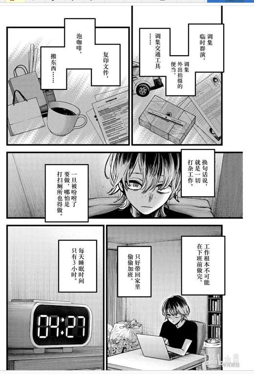
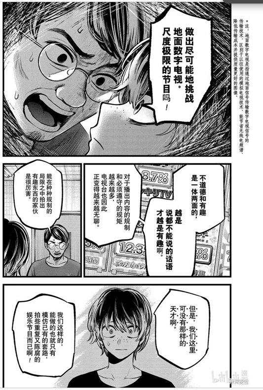
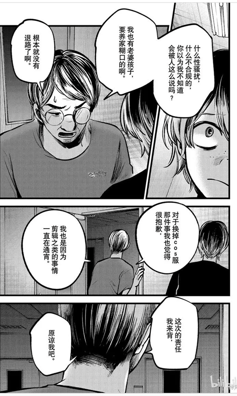
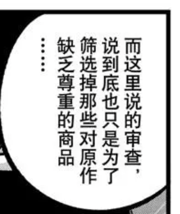
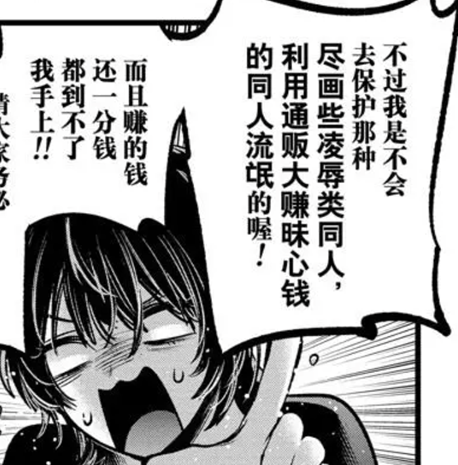
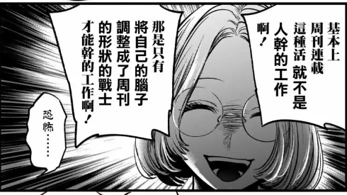
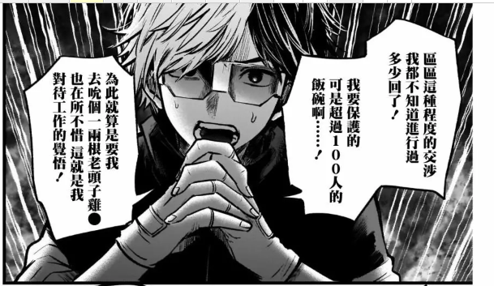
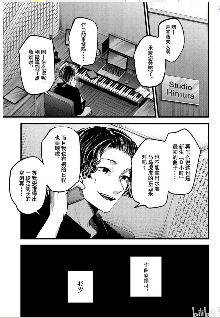
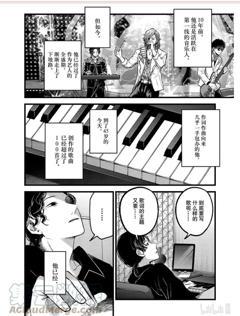
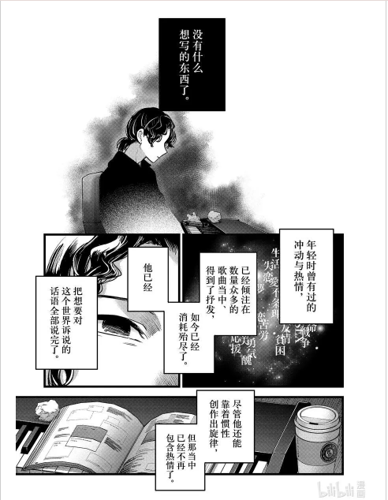
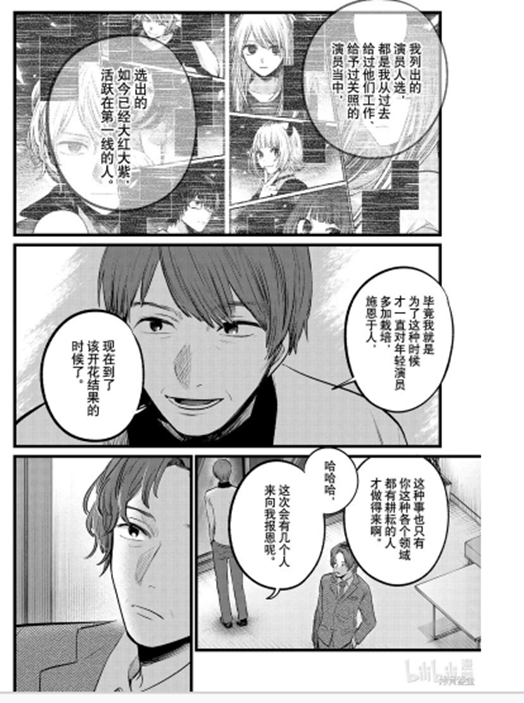
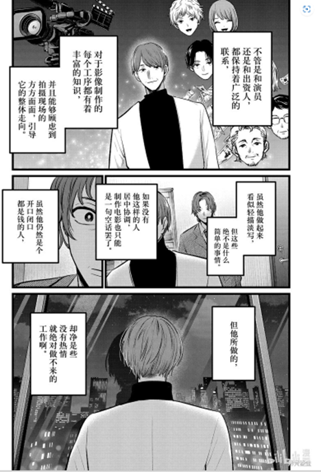
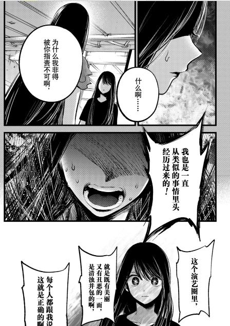